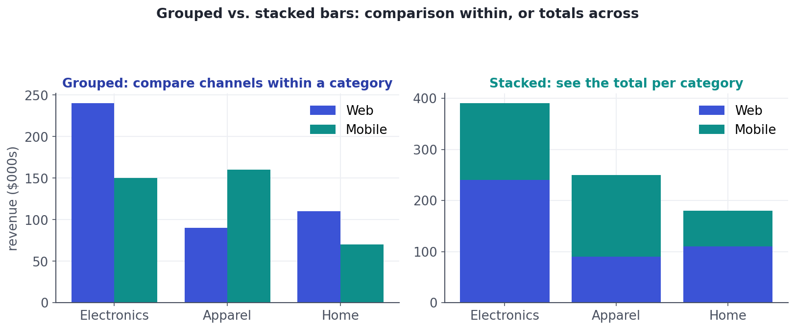
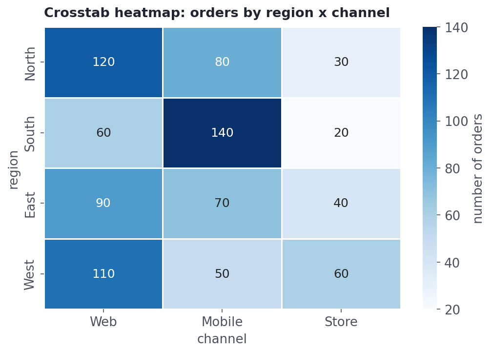

Exploring Categorical Data
Counts, proportions, grouped vs stacked bars, and crosstabs that reveal how categories relate.
Numbers get histograms and means; categories — region, channel, plan, product — need their own toolkit. You count them, turn counts into proportions, and study how one category relates to another. Categorical EDA is where you discover which groups dominate, which combinations are common, and whether a category is associated with an outcome — questions behind nearly every business decision.
Concept · one categoryCounts and proportions
The first thing to do with a categorical column is count its values. value_counts() gives the tally per category; adding normalize=True turns those into proportions (shares), which are usually more meaningful than raw counts — '40% of orders are from the North' lands better than '1,203 orders.' Visualize counts with a bar chart (sorted, from Lesson 5.3).
Concept · two categoriesTwo categories: grouped vs. stacked bars
To compare a value across two categorical dimensions at once — say revenue by category and channel — you have two bar layouts, and the right one depends on your question:

Concept · the relationshipThe crosstab (contingency table)
To study the relationship between two categorical variables, build a crosstab (a contingency table): a grid counting how often each combination occurs. pd.crosstab(a, b) makes it, and a heatmap renders it readable. Crucially, normalizing the crosstab turns counts into rates — e.g., the return rate per region — which is what you usually want to compare.

A crosstab is exactly the input to the chi-square test from Lesson 4.9: EDA reveals an apparent association between two categories (e.g., region and returns), and the chi-square test tells you whether it's more than chance. Explore first, then test.
PitfallHigh-cardinality categories
Some categorical columns have hundreds or thousands of unique values — zip code, product ID, free-text city. Plotting all of them is hopeless, and they choke many models. The standard moves: show the top-N and bucket the long tail into an 'Other' category, or group by a higher level (zip → state). You'll meet more powerful encodings in Track 9, but in EDA, top-N-plus-Other keeps charts and tables readable.
Worked exampleExplore categories in code
Counts, proportions, and a crosstab turned into a rate — the everyday categorical EDA moves in a few lines.
import pandas as pd
df = pd.DataFrame({
"region": ["North","South","North","West","South","North","West","South","North","West"],
"returned": [False, True, False, False, True, False, True, True, False, False],
})
# Counts and shares for one category
print("orders per region:")
print(df["region"].value_counts().to_string())
print("\nshare of orders (%):")
print((df["region"].value_counts(normalize=True) * 100).round(0).to_string())
# Crosstab of two categories, then turned into a RETURN RATE per region
ct = pd.crosstab(df["region"], df["returned"])
print("\ncrosstab (counts):")
print(ct.to_string())
rate = pd.crosstab(df["region"], df["returned"], normalize="index")[True] * 100
print("\nreturn rate by region (%):")
print(rate.round(0).to_string())orders per region: region North 4 South 3 West 3 share of orders (%): region North 40.0 South 30.0 West 30.0 crosstab (counts): returned False True region North 4 0 South 0 3 West 2 1 return rate by region (%): region North 0.0 South 100.0 West 33.0
★ Key points to remember
- Count a category with
value_counts(); addnormalize=Truefor proportions, which usually communicate better than raw counts. - Two categories on a bar chart: grouped to compare within a group, stacked to read the total per group.
- A crosstab (
pd.crosstab) shows the relationship between two categoricals; normalize it for rates, and visualize as a heatmap. - A crosstab feeds the chi-square test (Lesson 4.9): explore the association, then test it.
- For high-cardinality columns, show top-N + 'Other' or roll up to a coarser level.
product_id column has 5,000 unique values. What's a sensible EDA move before plotting it?◆ Practice▸
channel column.Show solution & reasoning
df["channel"].value_counts(normalize=True).mul(100).round(1). value_counts(normalize=True) gives proportions (summing to 1); multiplying by 100 and rounding yields readable percentage shares per channel.
device (Mobile/Desktop) against converted (True/False) and see Mobile has more conversions in absolute count. Why might that be misleading, and what do you compute instead?Show solution & reasoning
Absolute counts confound the conversion rate with traffic volume — Mobile may simply have far more visitors, so more conversions even at a lower rate. Compute the rate by normalizing the crosstab within each device (normalize='index'), giving conversion % for Mobile vs Desktop, which is the fair comparison. (Then a chi-square test, Lesson 4.9, checks if the difference is real.)
◎ Deep dive: crosstab normalization, encoding categories, and ordered vs. unordered axes▸
Row vs. column normalization — and Simpson's paradox again. pd.crosstab(..., normalize=...) accepts 'index' (each row sums to 1 — rates within the row category), 'columns' (each column sums to 1), or 'all' (the whole table sums to 1). Pick the one matching your question; mixing them up produces confident nonsense. And remember Simpson's paradox: a relationship in a 2×2 crosstab can reverse once you add a third variable, so check important associations within subgroups.
Encoding categories for models (a Track 9 preview). Charts and crosstabs are for understanding categories; models need them as numbers. The main routes are one-hot encoding (a 0/1 column per category — great for low cardinality) and target/frequency encoding (replace each category with a statistic, useful for high cardinality). Knowing during EDA whether a categorical column is low- or high-cardinality tells you which encoding headache is coming — and whether you'll need the 'top-N + Other' trick first.
Ordinal vs. nominal in charts. If a category has a natural order (Lesson 4.1) — S/M/L, Bronze/Silver/Gold — keep that order on the axis rather than sorting by frequency, so the chart respects the meaning. For unordered (nominal) categories, sort by value so the ranking is obvious. The right ordering is part of telling the truth with a chart.
A frequent trap question: 'Group A had more conversions than B — is A better?' The mature answer separates counts from rates: normalize for traffic/size before comparing, then test the difference (chi-square). Mentioning crosstab normalization and the count-vs-rate distinction shows you won't be fooled by raw totals.